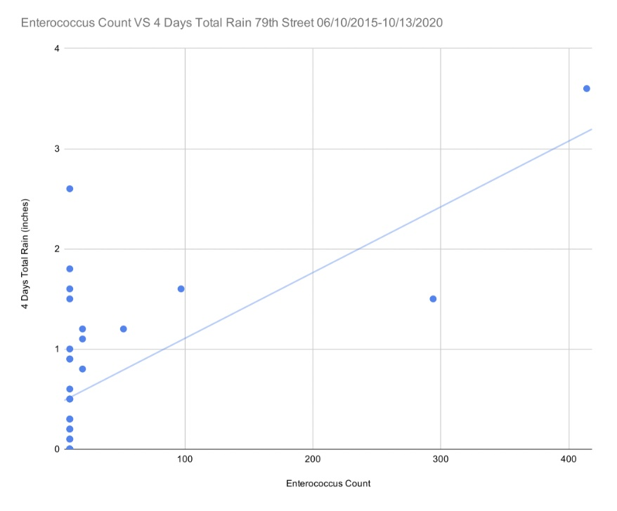

Environmental Science
For my Environmental Science Class, I had to investigate how safe the water parameters for a certain access point to the Hudson River is for recreational activities. My group member and I examined water parameters such as temperature, pH, salinity, dissolved oxygen and turbidity as well as an important indicator of waste sewage pollution called Enterococcus faecalis bacteria (EB for short).
All the evidence that I collected pointed out that the 79th midchannel point is a relatively safe place for all the organisms that live in that ecosystem and humans that use the water for recreational use.
However, just because this access point in the Hudson River is safe for recreational use does not mean that the others are. We are the ancestors of the future generations that have yet to come. We want our water quality to be safe and for all those future generations, including us. We must take steps and break these daily habits which make our water unsafe for use. These steps can be as simple as raising awareness to as complex as raising money for future projects. The change starts with us!